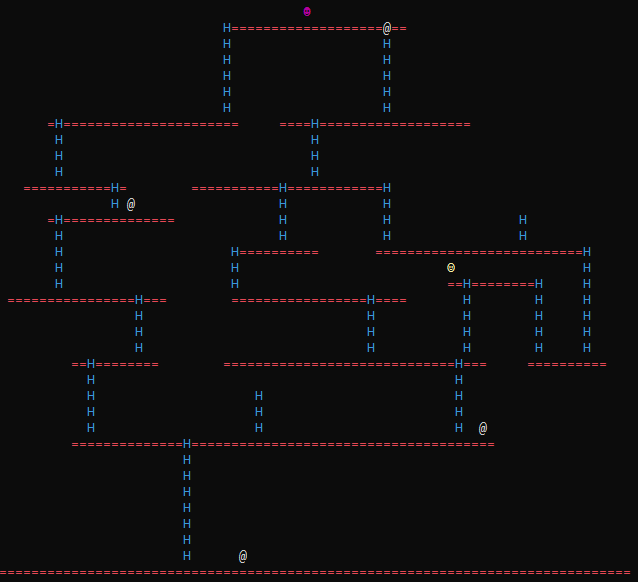

I used to be a university instructor. The classes I taught the most was an introduction to object oriented programming. We mostly went over programming basics like variables and control structures. Because of this, most of the assignments we did were console applications. Console applications are nice from a learning perspective because in most programming languages it's usually pretty easy to print text out to the screen. Unfornately, console applications have the drawback that they aren't usually nearly as flashy as mobile apps, web apps, or graphical desktop apps. But I wanted a way to show my students that just because they were making console apps, that didn't mean they couldn't make something interesting. So I decided to make a graphical game, using (mostly) only the skills that my students learned in class. And thus Donkey Kong ASCII was born!
This was the first time I made a console-based ASCII game. One of the interesting challenges I ran into was that updating every character on the screen every game frame ended up being too slow. So I ended up having to implement a version of double buffering where only the characters that change actually get updated. It was an interesting technical challenge, and I think the result turned out pretty well, considering what it is.
The code was originally written in C# 2(ish) targetting the .NET Framework. But the .NET Framework is Windows only, and isn't really being updated anymore. The new hotness is .NET Core, which is getting new versions annually and is cross platform. I recently took on the task of updating the code for Donkey Kong ASCII from .NET Framework to .NET Core. I even made it into a coding exercise!